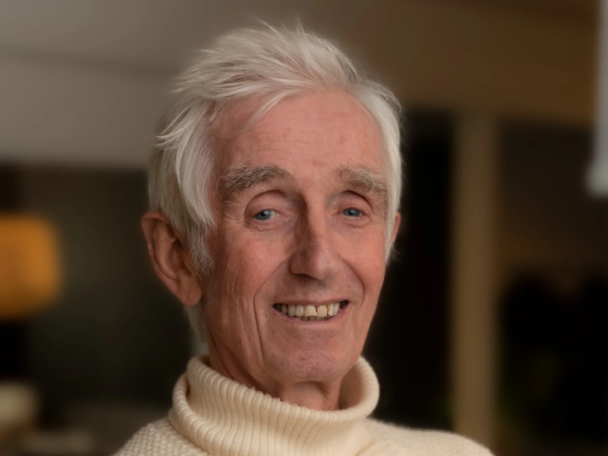
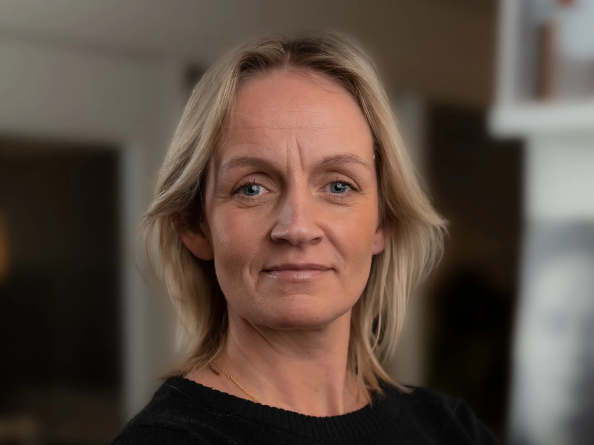
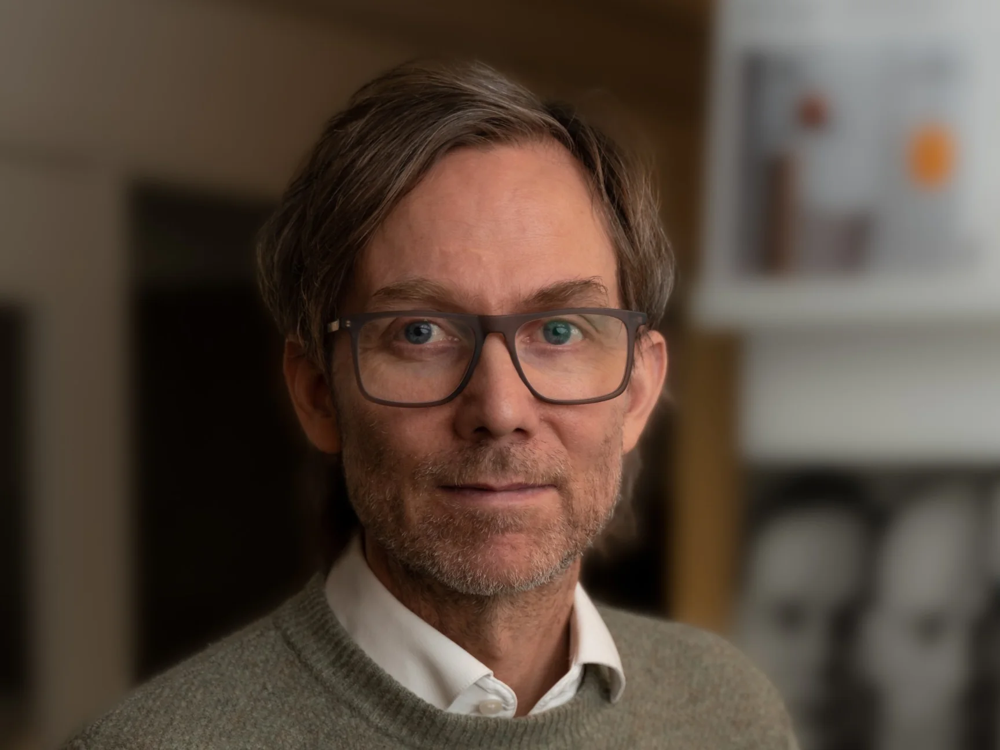
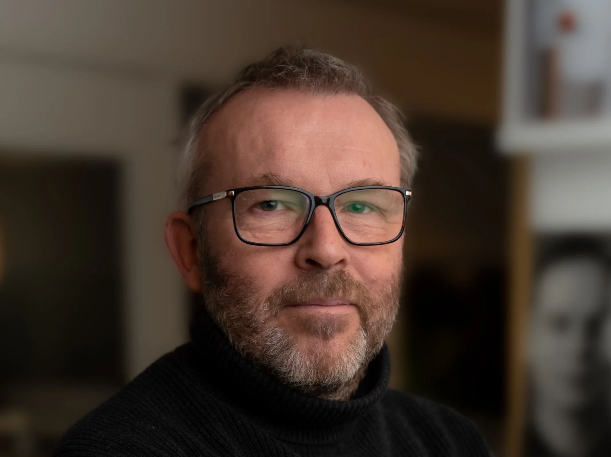
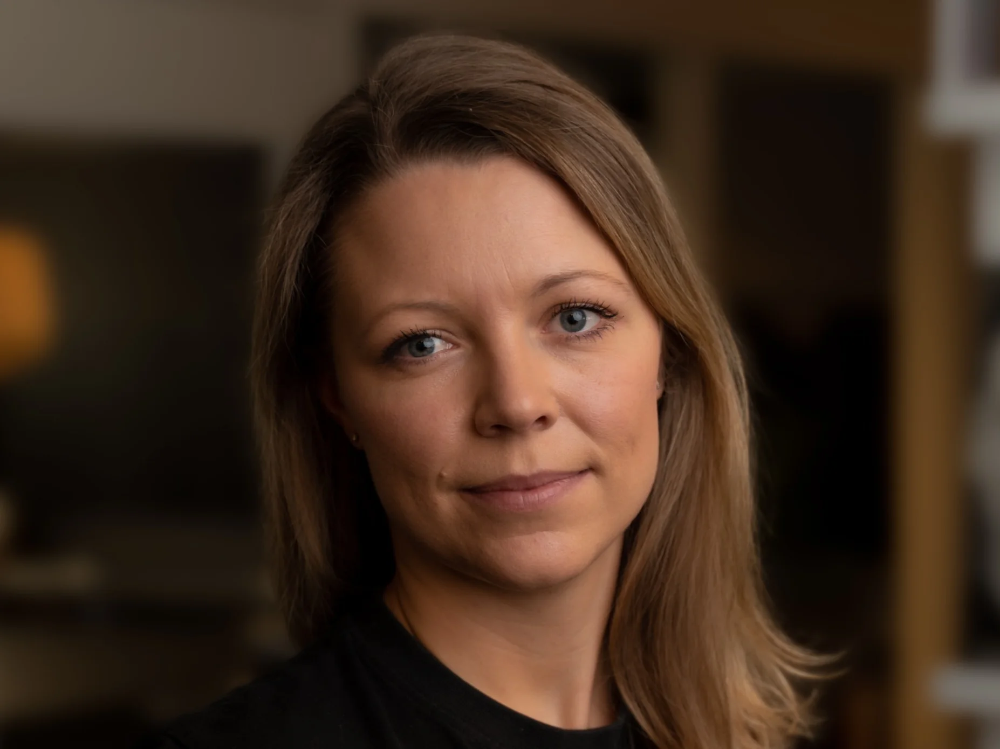
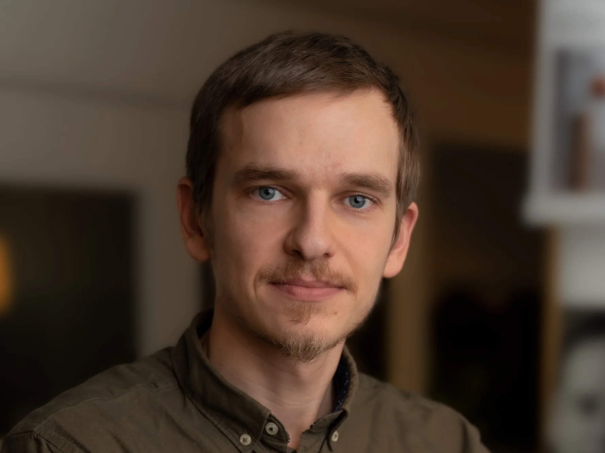

Viggo Hartmann
Sivilarkitekt
viggo@hartark.no922 68 060Et arkitektkontor i Asker med korte avstander mellom mennesker, fag og beslutninger.

Fem arkitekter og én interiørarkitekt gir kontoret erfaring fra boliger, offentlige bygg, interiører og planarbeid. Vi holder til i Asker og arbeider i Oslo-regionen.
Gode løsninger tar hensyn til både stedet og dem som skal bruke det. Derfor begynner arbeidet med å forstå behov, omgivelser og muligheter.
Vi utvikler prosjektene i dialog med oppdragsgiver og de andre fagene. BIM og 3D-modeller gjør det mulig å se sammenhenger og drøfte valg underveis.

Sivilarkitekt
viggo@hartark.no922 68 060
Sivilarkitekt
nina@hartark.no930 81 644
Sivilarkitekt
ole@hartark.no992 39 171
Interiørarkitekt MNIL
jostein@hartark.no481 13 247
Sivilarkitekt
kaja@hartark.no470 11 016
Sivilarkitekt
andrej@hartark.no405 66 580Vi arbeider i Asker, Oslo, Bærum, Drammen, Lier, Røyken og Hurum. Kunnskap om lokale forhold er en viktig del av prosjekteringen.
Kontoret er opptatt av gode bomiljøer for både yngre og eldre. Behovene endrer seg, og arkitekturen må gi rom for ulike måter å leve på.
Se fagområdene våreEt nytt hjem, et bygg som skal fornyes,
eller et område med muligheter?